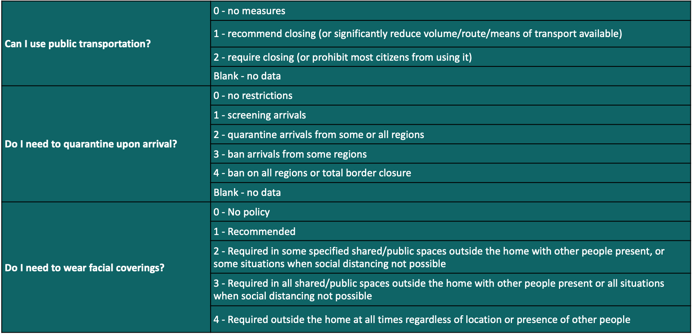

Thank you for visiting the first version of our web application. Using a dataset managed by the wonderful people at Oxford University, we're trying to simplify the process for you - a traveler - to better understand the quickly changing COVID-19 restrictions in place around the world by summarizing the important details in one, single location. Right now, this includes three pieces of information, with possible values summarized in the below table:
Right now, our site is pretty basic, but we have some big ideas for ways we might add to it! Here are some that we're working on:
If you are interested in giving any enhancement suggestions or if you encounter a bug, please open an issue on our Github page!